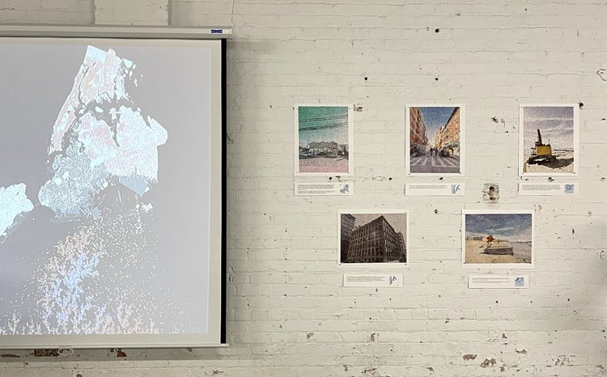
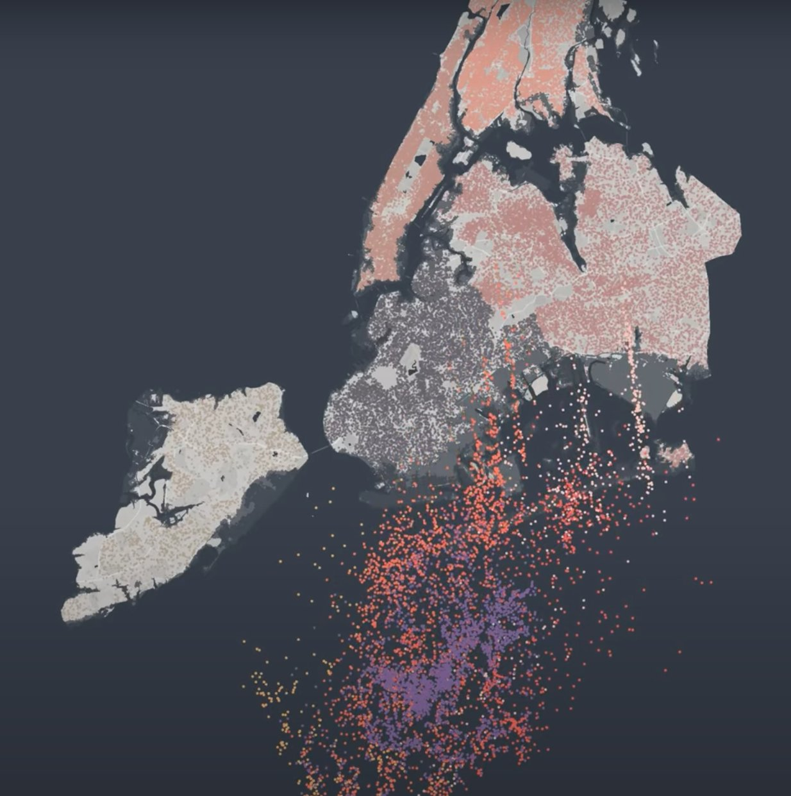
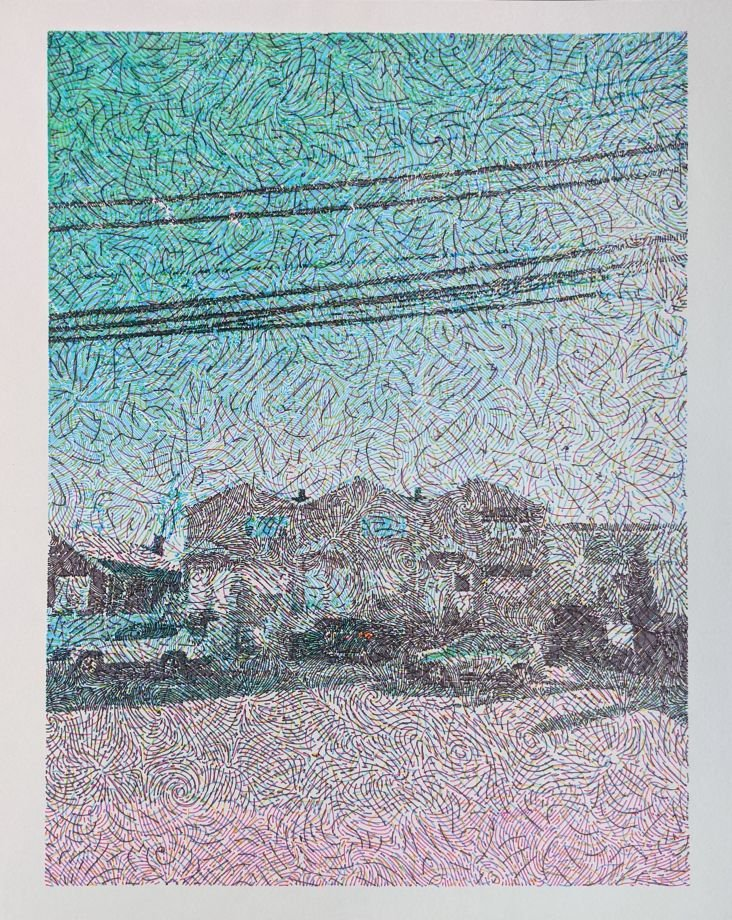
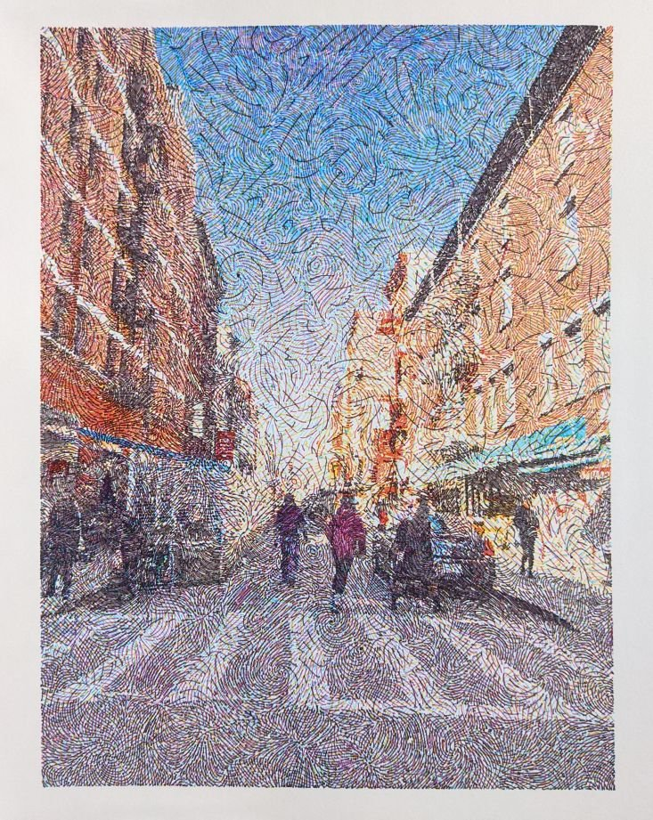
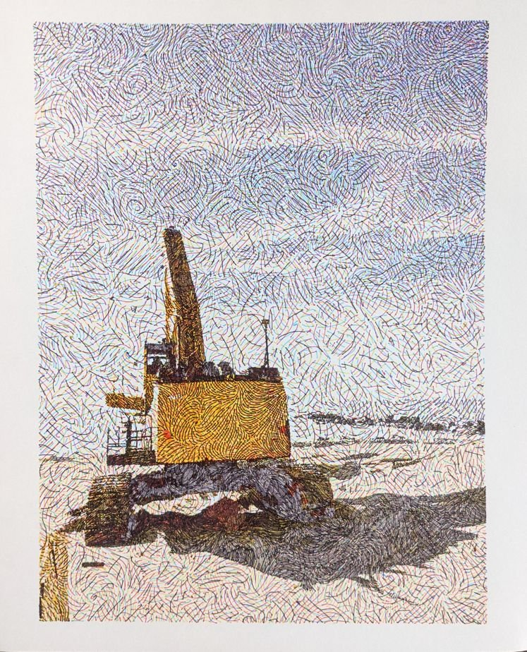
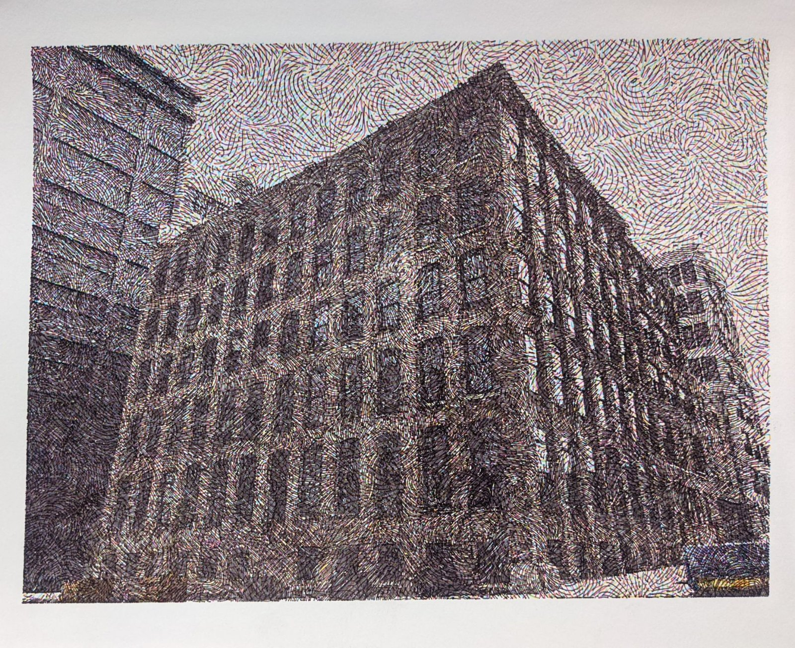
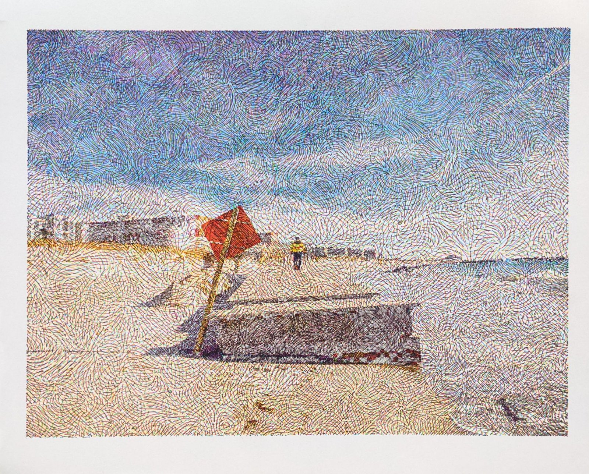
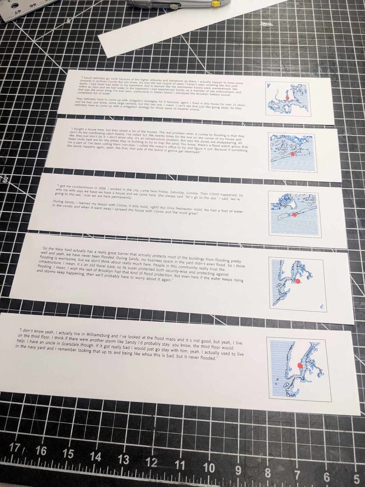

Data Visualization / Installation
2022
Jeff Fossett (90PERCENTART)
Jesse Bryant
Creative coding
Diffusion-limited aggregation
CMYK pen plotter
NYC Open Data, US Census
Art / Digital
In March 2022, Blue Lines + Future Coral was shown in Data Through Design 2022, "Ground Truth IRL," at The Hall in the Brooklyn Navy Yard. The exhibition featured works that creatively analyze and interrogate data from NYC's Open Data Portal. The project was a collaboration between Jeff Fossett and me (90PERCENTART) and our friend Jesse Bryant.
It tries to make sensible the growing problems around water, the people of New York, and a climatic future. Those problems are material, in the rising threat of flooding, and political: "blue-lining" is the commercial practice of building flood models into profit calculations, which limits access to flood insurance and 30-year mortgages based on estimated future climate risk.
The project combines flood data from projected sea-level-rise maps with US census data, interviews and drawings to imagine future waves of climate-driven displacement within New York's neighborhoods, and to explore their uncertain consequences.

The first piece is a dynamic data visualization. New Yorkers appear as dots, scattered across the city in line with population density. As flood water comes in, the dots are dislodged from their homes and drift down toward an imaginary sea floor, where they re-aggregate into procedurally generated, coral-like forms that stand for unknown future communities. Watch the full animation.

Coral is an apt metaphor. It is a composite, symbiotic creature: much of what we call coral is a coral polyp together with resident photosynthetic algae, and bleaching is the breakdown of that partnership. The people forced out of New York by flooding are not listless refugees; they are potential members of new symbiotic communities that will help them thrive and be helped in turn.
Generative art does conceptual work here. Conventional statistics puts tight boundaries on tractable uncertainty (confidence intervals, p-values), but struggles with the broad, qualitative uncertainty of imagining complex socioeconomic and environmental futures. Each coral form in the animation comes from a random, simulated process called diffusion-limited aggregation, with starting conditions based on the real NYC population distribution, run incrementally across different extents of flooding and a range of parameters.
The second piece pairs that high-level view with drawings and interviews from flood-prone areas of the city. Anonymous New Yorkers were asked: "If there was a flood, where would you go?" The drawings were generated with creative-coding tools from photographs we took in the city, then drawn in CMYK inks on a CNC pen plotter. Each is paired with a quotation from an interview in the same area.






We are grateful to the DxD organizers, and Rachel Daniell in particular, for their support and for curating the show. The full write-up is on the 90percentart blog.